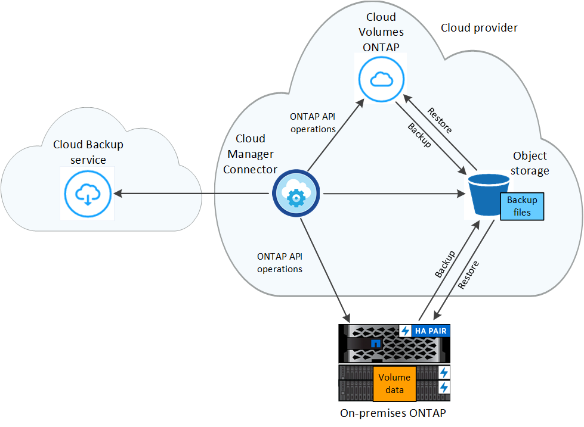

Amazon Web Services에서 직접 지원합니다
Amazon Web Services에서 직접 지원합니다
 Google 클라우드
Google 클라우드
 Microsoft Azure를 참조하십시오
Microsoft Azure를 참조하십시오
 문서 변경 요청
문서 변경 요청 이 페이지 편집
이 페이지 편집 기여하는 방법 자세히 알아보기
기여하는 방법 자세히 알아보기Cloud Backup에 대해 자세히 알아보십시오
Cloud Backup은 데이터의 보호 및 장기 아카이브를 위한 백업 및 복원 기능을 제공하는 Cloud Manager 작업 환경을 위한 서비스입니다. 백업은 자동으로 생성되어 퍼블릭 또는 프라이빗 클라우드 계정의 오브젝트 저장소에 저장됩니다.
필요한 경우 백업에서 전체 _volume_을 동일하거나 다른 작업 환경으로 복원할 수 있습니다. ONTAP 데이터를 백업할 때 또는 백업에서 하나 이상의 _files_를 동일하거나 다른 작업 환경으로 복원하도록 선택할 수도 있습니다.
백업 및 복원을 사용하여 다음을 수행할 수 있습니다.
-
Cloud Volumes ONTAP 및 사내 ONTAP 시스템에서 ONTAP 볼륨을 백업 및 복원합니다. "자세한 기능은 여기 에서 확인하십시오".
-
Kubernetes 영구 볼륨의 백업 및 복원 "자세한 기능은 여기 에서 확인하십시오".
-
클라우드 백업 for Applications를 사용하여 사내 ONTAP에서 클라우드로 애플리케이션 정합성을 보장하는 스냅샷을 백업합니다. "자세한 기능은 여기 에서 확인하십시오".
Cloud Backup의 작동 방식
Cloud Volumes ONTAP 또는 사내 ONTAP 시스템에서 클라우드 백업을 활성화하면 서비스가 데이터의 전체 백업을 수행합니다. 볼륨 스냅샷은 백업 이미지에 포함되지 않습니다. 초기 백업 후에는 모든 추가 백업이 증분 백업되므로 변경된 블록과 새 블록만 백업됩니다. 이렇게 하면 네트워크 트래픽이 최소로 유지됩니다.
대부분의 경우 모든 백업 작업에 Cloud Manager UI를 사용합니다. 그러나 ONTAP 9.9.1부터 ONTAP 시스템 관리자를 사용하여 사내 ONTAP 클러스터의 볼륨 백업 작업을 시작할 수 있습니다. "System Manager를 사용하여 Cloud Backup을 사용하여 볼륨을 클라우드에 백업하는 방법을 알아보십시오."
다음 이미지는 각 구성 요소 간의 관계를 보여줍니다.

백업이 상주하는 위치입니다
백업 복사본은 Cloud Manager에서 클라우드 계정에 만드는 오브젝트 저장소에 저장됩니다. 클러스터/작업 환경당 하나의 오브젝트 저장소가 있으며 Cloud Manager에서는 오브젝트 저장소의 이름을 "NetApp-backup-clusteruuid"로 지정합니다. 이 오브젝트 저장소를 삭제하지 마십시오.
-
AWS에서 Cloud Manager는 를 지원합니다 "Amazon S3 블록 공용 액세스 기능입니다" S3 버킷에서.
-
Azure에서 Cloud Manager는 Blob 컨테이너용 스토리지 계정이 있는 새 리소스 그룹 또는 기존 리소스 그룹을 사용합니다. 클라우드 관리자 "BLOB 데이터에 대한 공개 액세스를 차단합니다" 기본적으로 사용됩니다.
-
GCP에서 Cloud Manager는 Google Cloud Storage 버킷을 위한 스토리지 계정이 있는 신규 또는 기존 프로젝트를 사용합니다.
-
StorageGRID에서 Cloud Manager는 오브젝트 저장소 버킷에 기존 스토리지 계정을 사용합니다.
백업은 자정에 수행됩니다
-
매시간 백업은 시간 5분 전에 매시간 시작됩니다.
-
매일 백업은 매일 자정 직후에 시작됩니다.
-
매주 백업은 일요일 아침 자정이 지난 직후에 시작됩니다.
-
매월 백업은 매월 첫 번째 날에 자정이 지난 직후에 시작됩니다.
시작 시간은 각 소스 ONTAP 시스템에 설정된 표준 시간대를 기준으로 합니다. UI에서 사용자가 지정한 시간에 백업 작업을 예약할 수 없습니다. 자세한 내용은 시스템 엔지니어에게 문의하십시오.
백업 복사본은 NetApp 계정과 연결됩니다
백업 복사본은 와 연결됩니다 "NetApp 계정" 커넥터가 있는 위치.
동일한 NetApp 계정에 여러 커넥터가 있는 경우 각 커넥터는 동일한 백업 목록을 표시합니다. 여기에는 Cloud Volumes ONTAP 및 다른 커넥터의 온-프레미스 ONTAP 인스턴스와 연결된 백업이 포함됩니다.